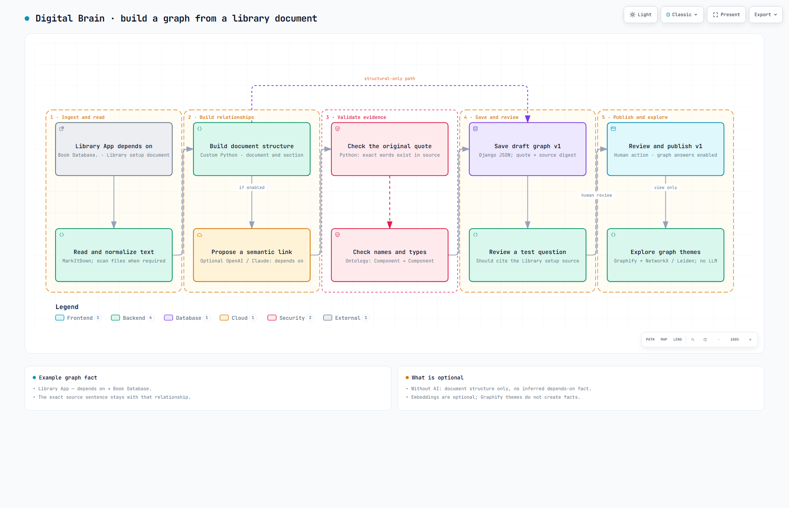
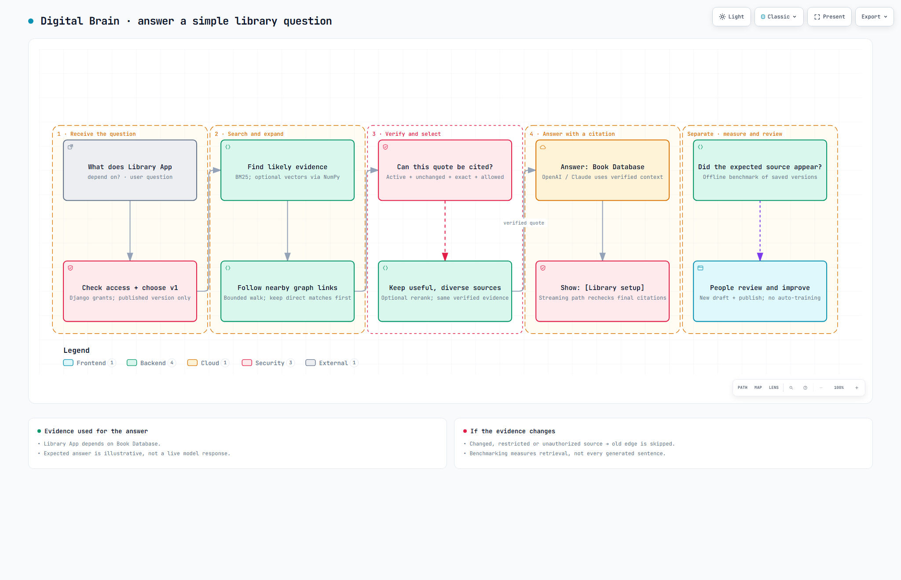

“Library App depends on Book Database.”
Document title: Library setup“What does the Library App depend on?”
Asked in Graph answer mode“The Book Database. [Library setup]”
Illustrative answer, not a live model responseImagine a library app that checks which books are available. The Book Database is simply the stored list of books. Follow the same sentence through graph generation, then graph retrieval.
“Library App depends on Book Database.”
Document title: Library setup“What does the Library App depend on?”
Asked in Graph answer mode“The Book Database. [Library setup]”
Illustrative answer, not a live model responseRead and convert the document, build structure, optionally propose a semantic relationship, validate it, save a draft, review it and publish it. Graphify groups existing nodes into themes; it does not create the example's semantic fact.

Choose a published graph, rank likely evidence, consider bounded graph connections, check the live source and viewer's access, then provide verified context to the selected answer model.

“We first read a document saying that the Library App depends on the Book Database. Our software builds document structure, and an optional AI model can propose that relationship. The server checks the quote and the types before saving it. A person reviews and publishes the graph. When someone asks what the app depends on, the system finds the relationship and checks whether its source is still valid and allowed for that person. The model can then answer ‘Book Database’ and show the Library setup citation. Known test questions help people improve later versions; the system does not automatically train itself after every chat.”
Prepared 13 October 2026. All sample names and documents are synthetic. The two diagrams are browser-validated and visually reviewed; this overview page is statically checked.